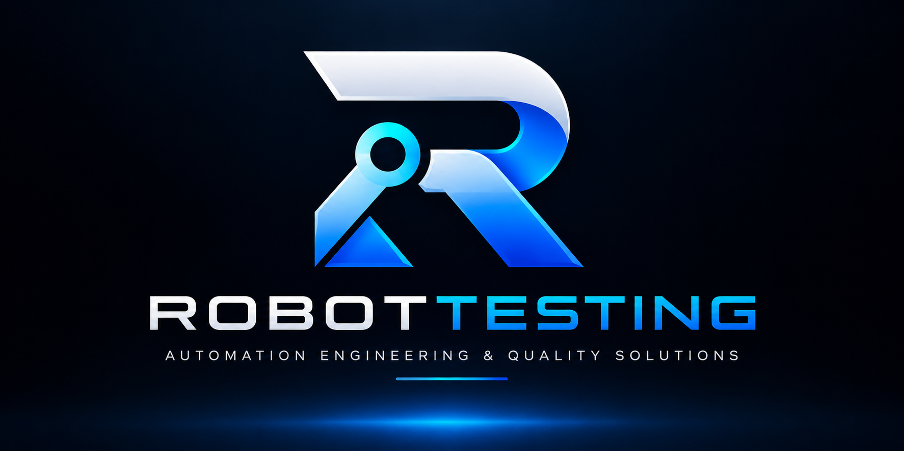

</>
Web Automation
Regresión funcional y E2E para aplicaciones web.
Playwright · SeleniumSoluciones de Quality Engineering para Web, Mobile y APIs: frameworks mantenibles, pruebas de performance, CI/CD y automatización acelerada por IA con supervisión humana.

No vendemos scripts aislados. Diseñamos una estrategia de automatización que pueda mantenerse y crecer con el producto.
Regresión funcional y E2E para aplicaciones web.
Playwright · SeleniumFlujos críticos para apps nativas, híbridas y mobile web.
Appium · Android · iOSServicios REST, integración y validación UI + API.
REST · PostmanCarga, estrés, escalabilidad y análisis de resultados.
JMeter · LoadRunnerAplicamos IA para acelerar análisis, diseño de pruebas, generación asistida y diagnóstico. La revisión técnica, arquitectura y aceptación permanecen bajo supervisión humana.
Conoce el enfoque →